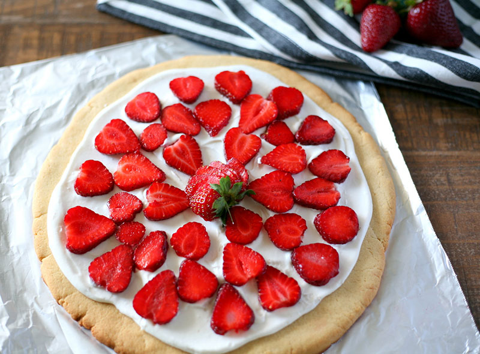

Strawberry Pizza

Ingredients
- 1 1/2 cup All-purpose flour
- 1 cup Butter or margarine
- 1/4 cup Brown sugar
- 1/2 cup Chopped pecans
- strawberries
Procedure
- ---FILLING--- pk (8 oz) cream cheese /4 c Confectioners' sugar Container (8 oz) whipped -topping
- ---TOPPING--- pk (3 oz) strawberry gelatin /2 c Sugar ds Salt c Water or strawberry juices, -divided tb Cornstarch c Sliced strawberries
- To make crust, mix all ingredients to form dough. Spread in pizza pan. Bake at 400 degrees for 15 minutes.
- For filling, mix cream cheese and confectioners' sugar; fold in whipped topping. Spread over cooled crust.
- To make topping, combine gelatin, sugar, salt and 1/2 cup water or strawberry juice. Dissolve cornstarch in remaining water; stir into gelatin mixture. Cook over medium heat until thickened. Stir in strawberries to coat all slices; cool. Spread on top of filling
- Chill pizza.